这里是西工大-信息安全基础能力训练（Information Security Fundamental Ability Training）课程的实验报告！敬请参观与指正！请勿直球抄袭！本人不对任何抄袭借鉴行为及其后果负责。
题目来源是 CTFHub 中的技能树-Web-Web前置技能-HTTP协议，网上 Writeup 满天飞好吧。
实验一
实验目的
搭建 DVWA 靶机环境。
实验过程
- 配置代理，使用 NAT 模式，安装 proxychains 并配置。
- 下载 DVWA 到本地：输入
proxychains git clone https://github.com/digininja/DVWA.git，再输入sudo mv DVWA /var/www/html移动到相应文件夹中。 - 开启 apache2 服务：
sudo service apache2 start - 拷贝配置文件：
cp config/config.inc.php.dist config/config.inc.php
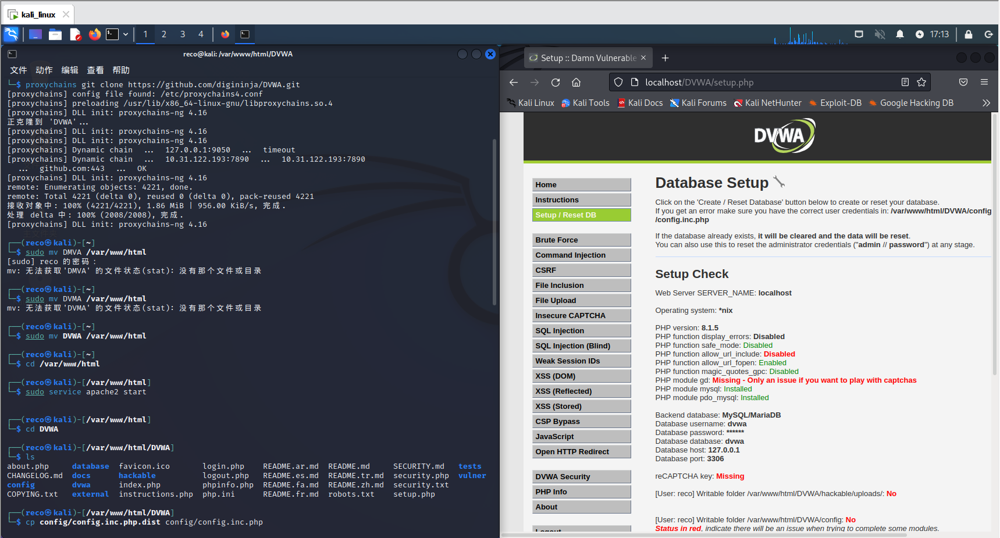
- 开启数据库：
service mariadb start - 配置数据库，在 root 用户下创建用户，验证创建成功。
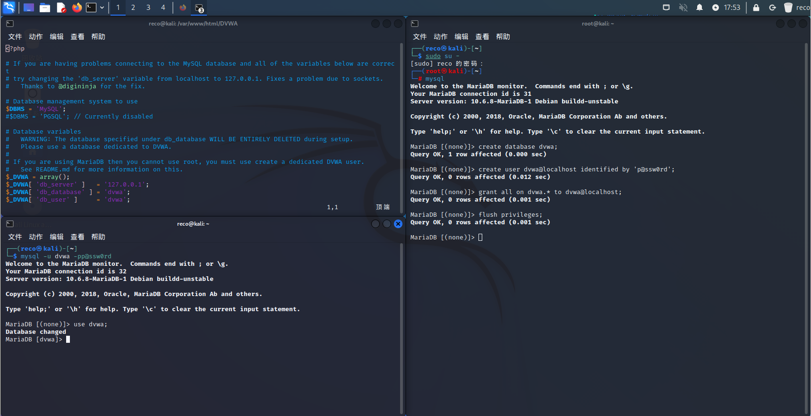
- 在最新版本（8.2）中开启 PHP function allow_url_include、安装 php-gd 模块、设置文件夹的写权限、在 dvwa/config/config.inc.php 中设置 reCAPTCHA key。
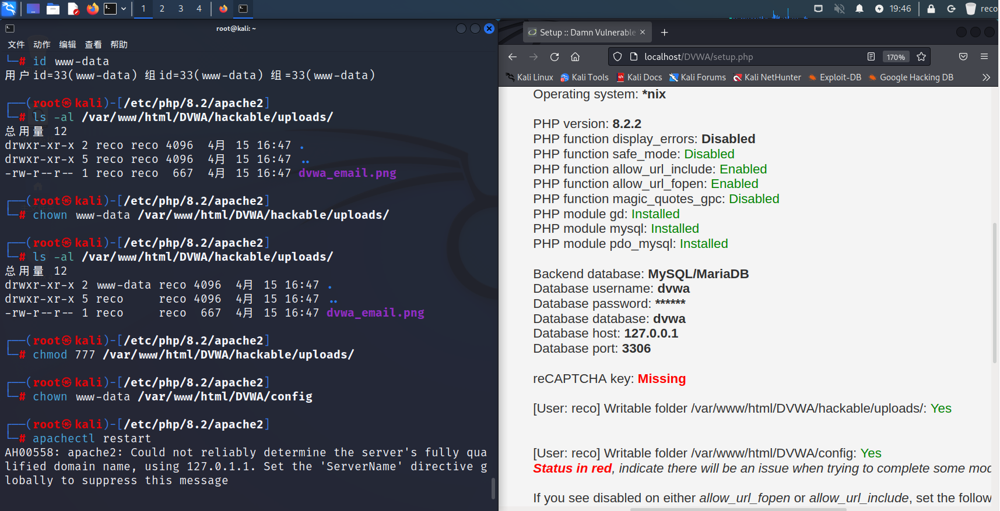
- 在 security.php 中设置安全等级，在此设置为 Low。
网络配置（重要）
- 编辑-虚拟网络编辑器-更改设置-还原默认设置（记得备份），之后添加enth0、1、8(NAT)
- 虚拟机-设置-网络适配器-NAT模式
- 在 Kali Linux 中，右键“网络管理器”-启动联网。打开终端并输入以下命令：
1 | sudo vim /etc/network/interfaces |
- 在打开的文件中，将以下行添加到文件的末尾：
1 | auto eth8 |
-
保存并关闭文件（在 Nano 中，按下 Ctrl+X，然后输入 Y 并按下 Enter）。
-
重启网络服务，使新的配置生效：（
reboot也行）
1 | sudo systemctl restart networking |
- 安装 proxychains，更改
/etc/proxychains4.conf配置信息，添加sock5 <IP> <port>、http <IP> <port>。（宿主机（WLAN的） IP 更改需要更改这些项） - 终端中的任何命令，只要是想经过代理，都需要在前面添加
proxychains。启动mariadb和apache2似乎需要经过代理，打开http://localhost/DVWA/setup.php似乎不能经过代理。火狐需设置为“使用系统代理设置”。
下面是 AI 跑出来的连接宿主机的 Clash 代理的方法，未经尝试验证，谨慎试用：
要在 VMware 中的 Kali Linux 2022.3 虚拟机中连接宿主机的 Clash 代理，您需要执行以下步骤：
-
在宿主机上安装 Clash 代理并启动。确保您已经设置好了代理服务器的端口和密码。
-
在 VMware 虚拟机中，选择“NAT 模式”，这将允许您的虚拟机与宿主机使用相同的 IP 地址。
-
在 Kali Linux 中，打开终端并输入以下命令：
1 | sudo nano /etc/environment |
- 在打开的文件中添加以下行：
1 | http_proxy="http://<宿主机 IP 地址>:7890" |
请注意将 “<宿主机 IP 地址>” 和 “<Clash 代理端口>” 替换为您实际使用的值。
-
保存并退出文件（在 Nano 中，按下 Ctrl+X，然后输入 Y 并按下 Enter）。
-
重新启动 Kali Linux，以便它能够读取新的环境变量。
现在您的 Kali Linux 虚拟机应该能够连接到宿主机上运行的 Clash 代理。您可以尝试在终端中运行以下命令来测试代理是否正常工作：
1 | curl https://www.google.com |
如果一切正常，您应该能够看到 Google 的 HTML 代码。如果出现错误，请检查代理服务器的设置和连接。
参考资料
- https://customerconnect.vmware.com/cn/downloads/#all_products
- Get Kali | Kali Linux
- VMware 中安装 Linux-kali.2021（详细图文教程）
- Install Kali Linux 2022.2 – Step by Step with Screenshots
- VMware 虚拟机网络配置-NAT 篇 - 知乎
这其中提到的“虚拟网络编辑器”中的“子网 IP”，在掩码为 255.255.0.0 的情况下，IP 第三部分可以一样。（宿主机 IP 更改需要更改这些项） - Ubuntu22.04 vm 虚拟机使用宿主机 Clash for Windows - 知乎
前半段 VM 中的配置可参考。 - 在 VMware ubuntu 18.04虚拟机中使用主机clash for window代理上网 - 知乎
同样是参考。 - Kali 虚拟机使用 proxychain4通过主机代理上网 - 简书
/etc/proxychains4.conf配置信息中，除了需要添加sock5 <IP> <port>之外，还需要添加http <IP> <port>。（宿主机 IP 更改需要更改这些项）
终端中的任何命令，只要是想经过代理，都需要在前面添加proxychains。 - Kali Linux 科学上网
查看“通过已经可以科学上网的电脑实现科学上网”一章节即可。 - 简单的 Kali 虚拟机代理配置教程
- Kali Linux 虚拟机连宿主机代理配置！
后续题目参考资料
HTTP
curl
Burp Suite
- BurpSuite_pro_v2.1
- burp suite 1.7安装教程 2.1版本也能使用这个步骤
- java 环境配置(详细教程)
- Burp破解及代理抓包.mp4_哔哩哔哩_bilibili
- 黑客工具之BurpSuite详解
CTFHub
- CTFHUB-WEB 前置技能-HTTP 协议-请求方式
- CTFHub-web(基础认证)
- CTFHub - Web（一）
- CTFHuB-技能树-Web前置技能-HTTP协议
- CTFhub-WEB前置-http协议闯关 | HTTP
- CTHub–ctf–web–http（1.请求方式2.302跳转3.cookie4.基础认证5.响应包源代码）
- NANXmm的博客_CSDN博客-writeup,学习笔记领域博主
实验二
实验目的
请求方式：HTTP 请求方法, HTTP/1.1协议中共定义了八种方法（也叫动作）来以不同方式操作指定的资源。
使用某一请求方法对某网页请求以得到 flag。了解 HTTP 消息、HTTP 的八种请求方法；学习 curl、Burp Suite 的使用方法。
实验过程
1. 理论学习
HTTP 消息分为请求 Request 和响应 Response。请求报文包括以下格式：请求行 Request line、请求报头 Request header、消息正文 body；响应报文包含：响应行 Response line、响应报头 Response header、消息正文 body。
在请求报文的请求行中，第一个字段是请求方法。HTTP/1.1协议的八种请求方法为：GET、HEAD、POST、PUT、DELETE、CONNECT、OPTIONS、TRACE。可以使用 curl -X 指定请求方法。
2. curl 方法
启动环境，打开给出的网页链接，发现网页内容如下：
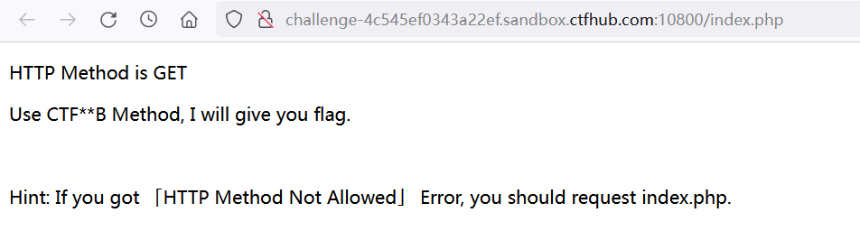
可以看到，网页提示使用 CTF**B 方法，而非上述八种方法的任何一种。若提示 HTTP Method Not Allowed 错误，需要请求 index.php。可以很明显地猜出，该方法是 CTFHUB 方法。
在终端输入 curl -X CTFHUB http://challenge-4c545ef0343a22ef.sandbox.ctfhub.com:10800，结果如下：
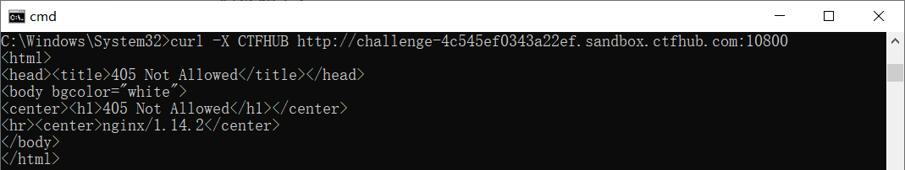
可以看到，返回了错误命令 405 Not Allowed，因此我们需要请求 index.php。使用 curl -X CTFHUB http://challenge-4c545ef0343a22ef.sandbox.ctfhub.com:10800/index.php，结果如下：
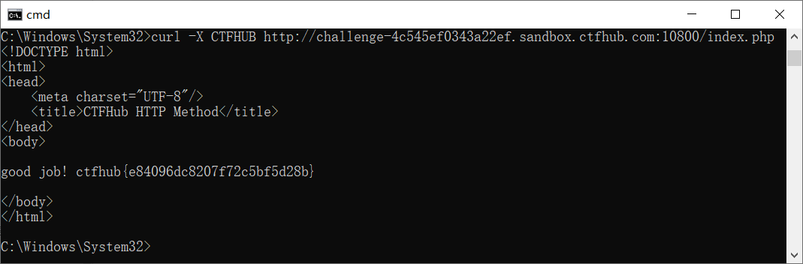
得到 flag：ctfhub{e84096dc8207f72c5bf5d28b}
3. 抓包方法
使用 Burp 抓取请求包，发送到 Repeater 之后，修改请求方法为 CTFHUB，再重新请求，得到 flag：ctfhub{3f0a1e15bc79949eceb40623}。（重开环境了）
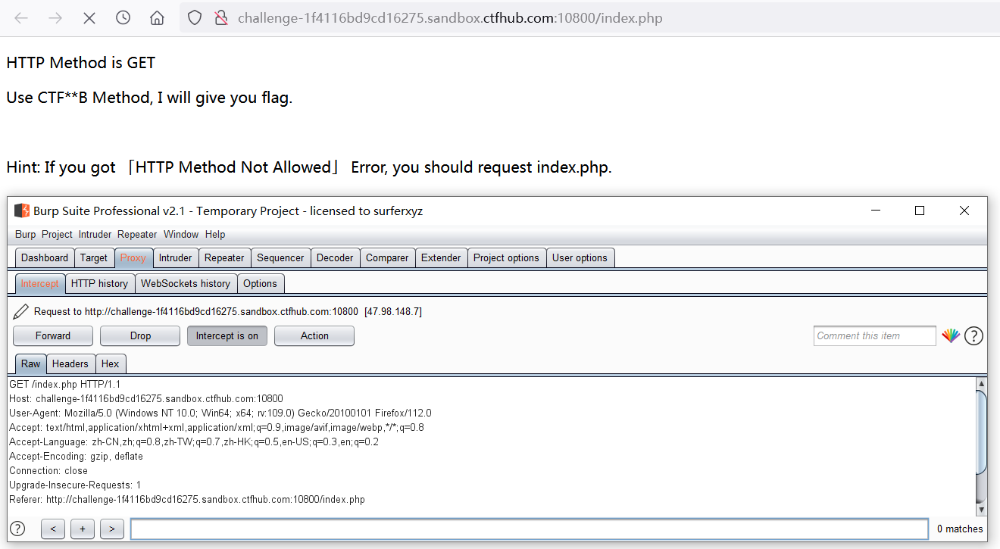
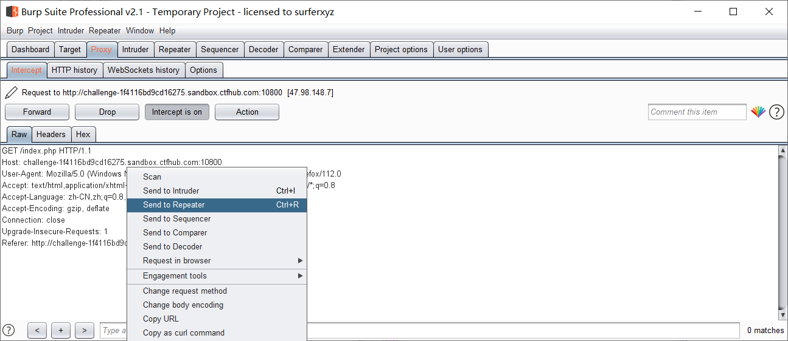
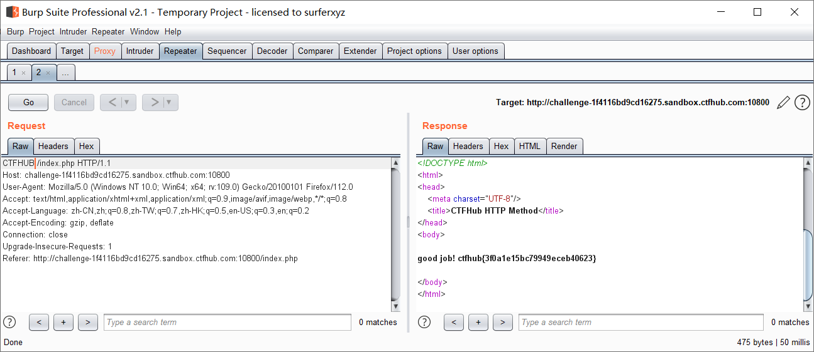
实验三
实验目的
302跳转：HTTP 临时重定向
分析网页发生的重定向，规避重定向并获取 Flag。了解 HTTP 消息、状态码、重定向；学习 curl、Burp Suite 的使用方法。
实验过程
1. 理论学习
在响应报文中，响应行包含状态码 Status code。1 开头的状态码表示请求已被接受，需继续处理，这类响应是临时响应；2 开头表示请求已被服务器成功接收；3 开头表示重定向，客户端须采取更多操作来实现请求；4 开头表示客户端出现错误；5 开头表示服务器出现错误。
HTTP 重定向（redirect）操作由服务器向请求发送特殊的重定向响应而触发，该响应中包含着 3 开头的状态码，和保存重定向 URL 的 Location 字段。浏览器接收到重定向响应后，立刻加载 Location 标头中的新 URL。重定向包含永久重定向、临时重定向、特殊重定向，其中 302 状态码属于临时重定向，表示由于不可预见的原因请求的页面暂不可用。
在 curl 中，-L 参数可以让请求跟随重定向，而 curl 默认不跟随重定向。
2. curl 方法
启动环境，访问链接，在该网页中点击 Give me Flag 链接，发现该网页好像发生了重新加载，根据题目推测发生了 302 重定向。
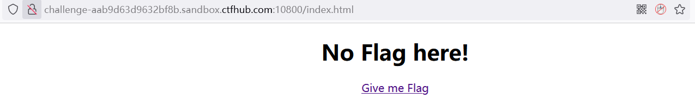
打开开发者模式，选择“网络”，再次点击链接，发现确实发生了 302 重定向。查看响应头，发现重定向到 /index.html，即为当前打开的 URL，如图所示：
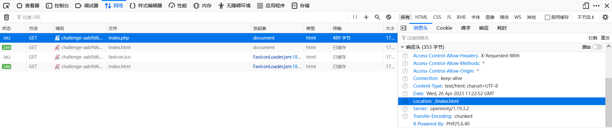
使用 curl 直接请求 Give me Flag（即 /index.php）而不加 -L 参数 ，可得到 Flag：
ctfhub{9234a08cb18828605359a3db}
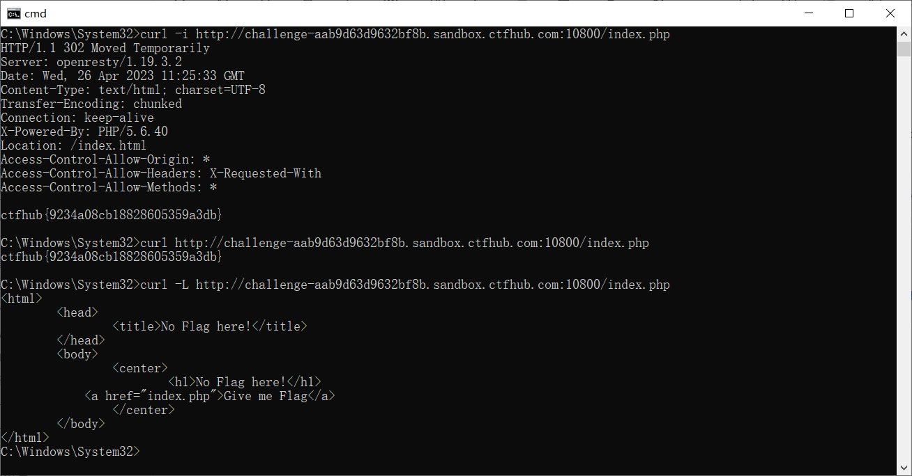
3. 抓包方法
使用 Burp 抓取请求包，发送到 Repeater 之后，修改 URN 为 /index.php，再重新请求，得到 flag：ctfhub{0e41b55522fbb7b454eed21b}。（重开环境了）
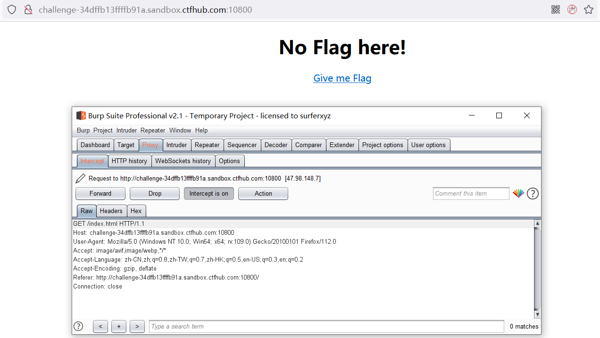
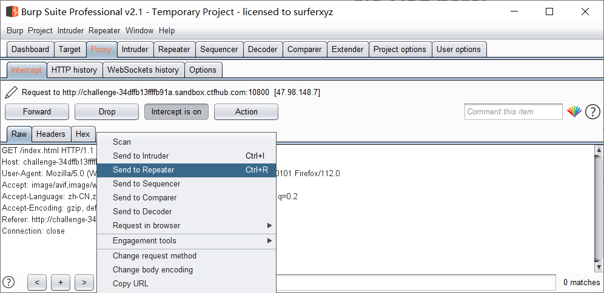
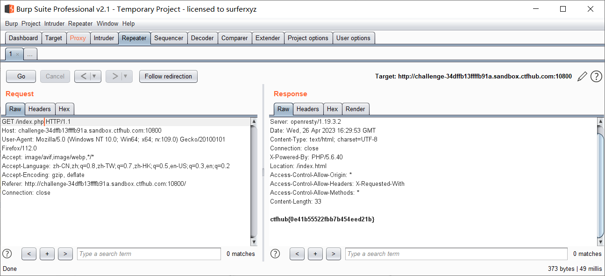
实验四
实验目的
Cookie：Cookie 欺骗、认证、伪造
发送修改过 cookie 的请求报文，以获得 Flag。了解 HTTP 消息、cookie；学习 curl、Burp Suite 的使用方法。
实验过程
1. 理论学习
Cookie 由服务器端创建后返回给浏览器。cookie 以字符串的形式存储，其表示形式为键值对。客户端发送请求时，请求报头携带了在 Path 属性中包含了请求的 URL 的 cookie。curl 中 -b 参数可用来向服务器发送 cookie。
2. 开发者模式方法
打开环境给出的链接，发现网页提示 only admin can get flag.
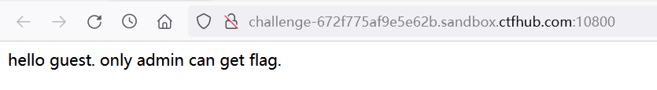
进入开发者模式，选择“网络”，刷新网站后查看请求头，发现 cookie 中 admin=0：
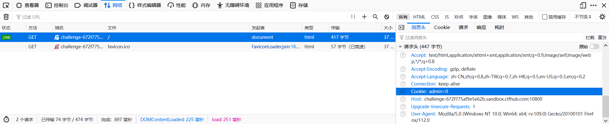
右键该消息，选择“编辑并重发”，输入网址，在消息头中添加 Cookie 项，写入 admin=1，再点击“发送”，可以在右侧的“响应”中看到 Flag：ctfhub{50624786f30f02058e228bb3}
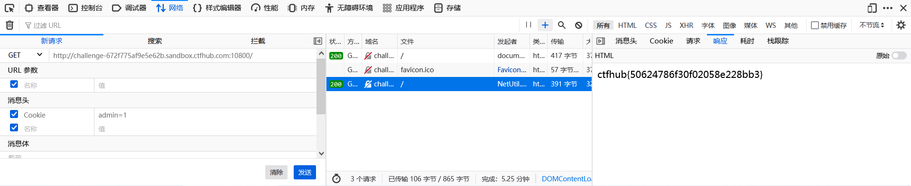
3. curl 方法
使用 -b 或 --cookie 参数，使用双引号包含 Cookie 键值对 admin=1，可得到 flag。
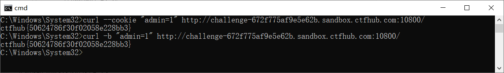
$p.s.$ -H 参数同样可以用来添加请求的 Cookie 标头来实现同样的功能：-H "Cookie: admin=1"
4. 抓包方法
抓取请求包，Repeater 中将请求报头里的 admin=0 改为 admin=1，点击“Go”发送即可。
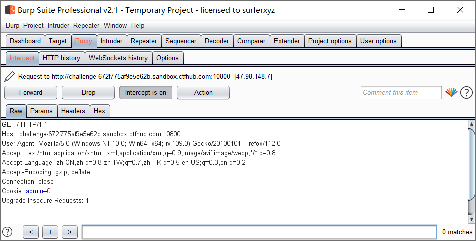
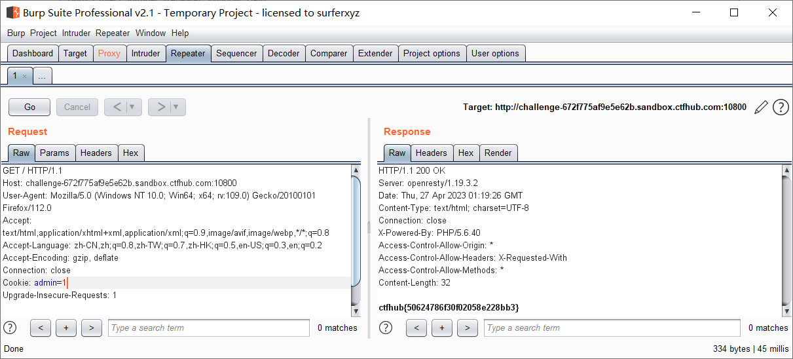
实验五
实验目的
基础认证：在 HTTP 中，基本认证（英语：Basic access authentication）是允许 http 用户代理（如：网页浏览器）在请求时，提供 用户名 和 密码 的一种方式。详情请查看 https://zh.wikipedia.org/wiki/HTTP基本认证
使用字典爆破账号密码，得到 Flag。了解 HTTP 消息、基础认证；学习 Burp Suite、Python requests 和 urllib 库的使用方法。
实验过程
1. 理论学习
在进行基本认证的过程里，请求的HTTP 头字段会包含
Authorization字段，形式如下：Authorization: Basic <凭证>，该凭证是用户和密码的组和的base64编码。基本认证 并没有为传送凭证（英语：transmitted credentials）提供任何机密性的保护。仅仅使用 Base64 编码并传输，而没有使用任何 加密 或 散列算法。因此，基本认证常常和 HTTPS 一起使用，以提供机密性。
2. Burp Intruder 方法
打开链接，点击 click，抓包发现网站提供一个认证域，其中验证的模式为 Basic，保护域为 realm="Do u know admin ?" 由此猜测用户名为 admin。
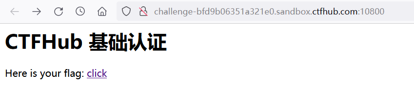
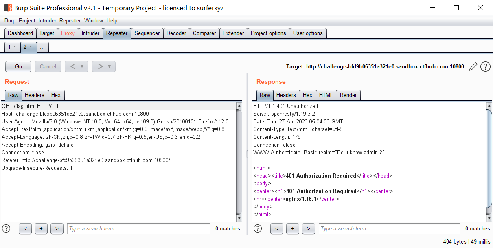
用户名中输入 admin，随便输入一个密码，抓取请求包，送到 Intruder 中：
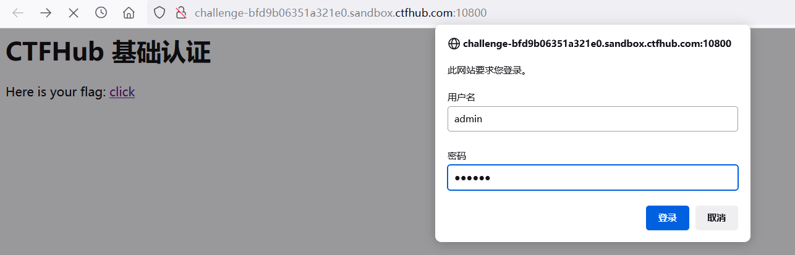
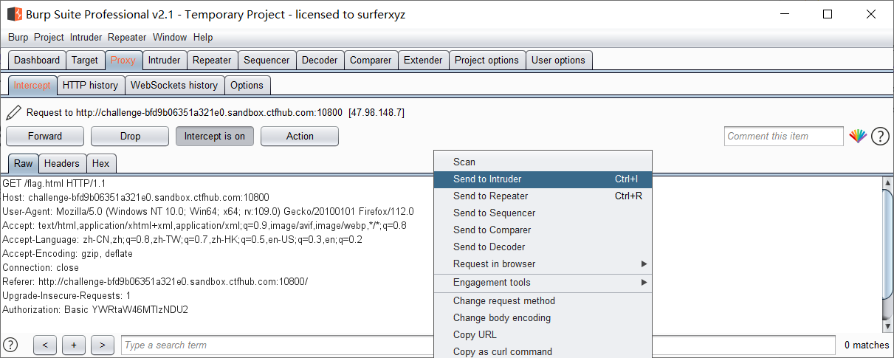
选择用户名密码键值对对应的位置，即 Basic 之后的 Base64 密文，点击 Add § 将其添加为 Payload 插入点。
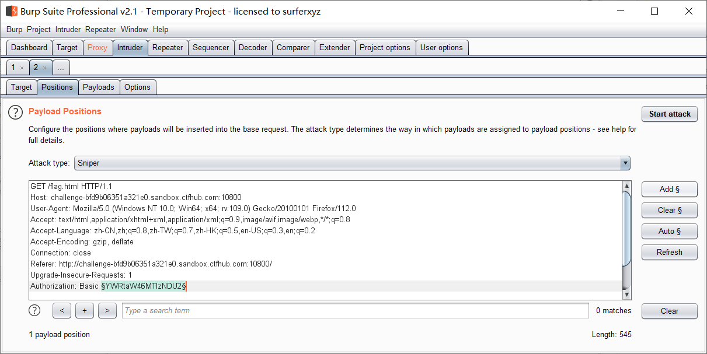
导入附件中的密码表，添加前缀 admin:，设置编码方式为 Base64 加密，取消选择 URL 加密。
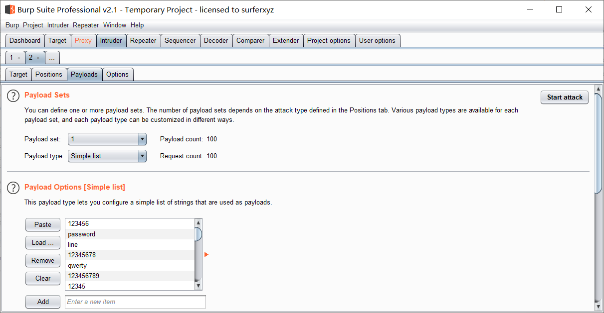
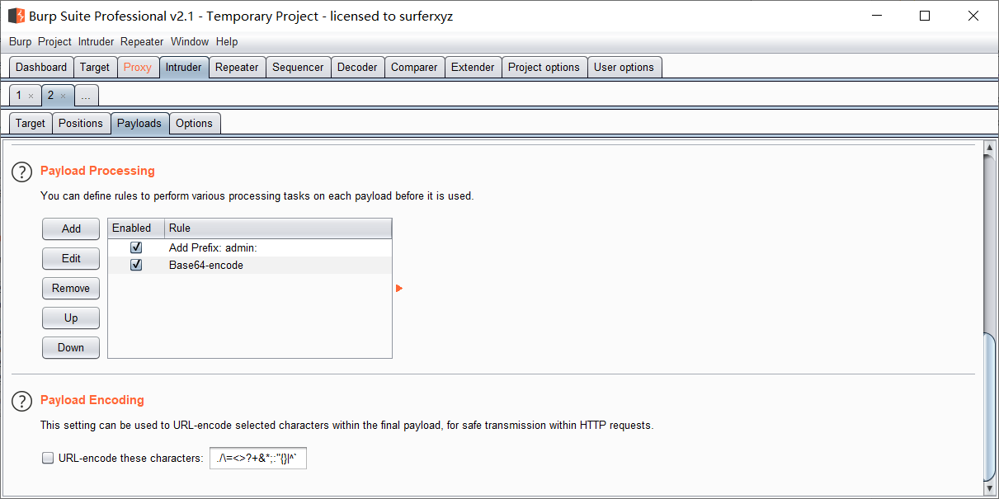
点击界面最上方的“Start attack”，开始破解，在结果中找出状态码为 200 的项目，选择并查看 Response 即可得到 Flag。（下下图中是将包含正确密码的请求在 Repeater 中发送后得到的响应。）
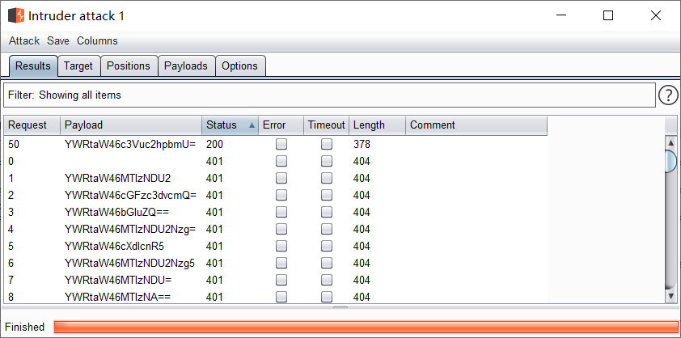
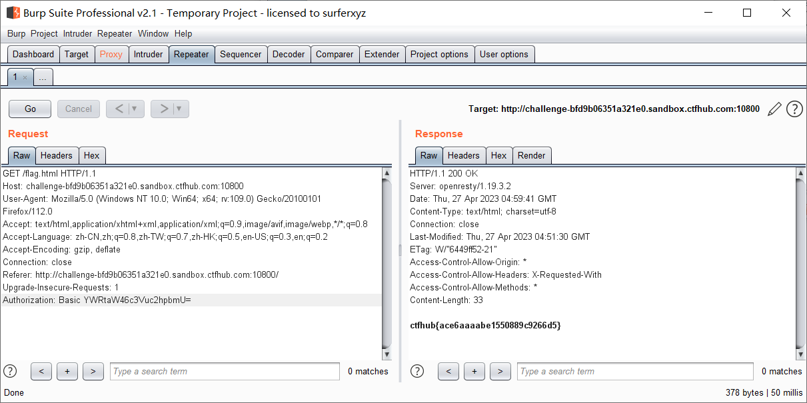
Flag 为：ctfhub{ace6aaaabe1550889c9266d5}
3. Python 方法
使用 requests 库，有两种方法。
auth=HTTPBasicAuth()
1 | import requests |
headers
1 | import requests |
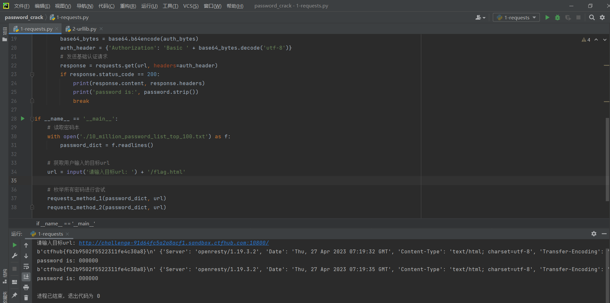
得到正确的密码为 000000，认证得到 Flag：
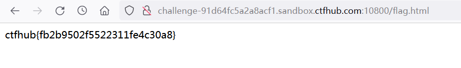
实验六
实验目的
响应包源代码：HTTP 响应包源代码查看
查看网页源码，找出 Flag。学习开发者模式的使用和网页源码的查看方法。
实验过程
- 打开环境给出的链接，使用 F12 打开开发者模式：
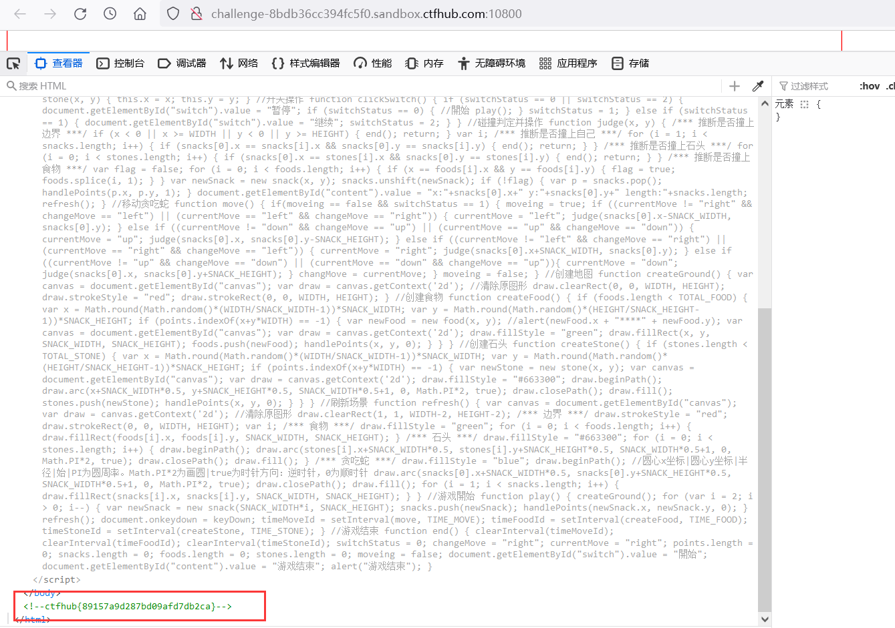
- 使用 Ctrl+U 查看网页源代码：
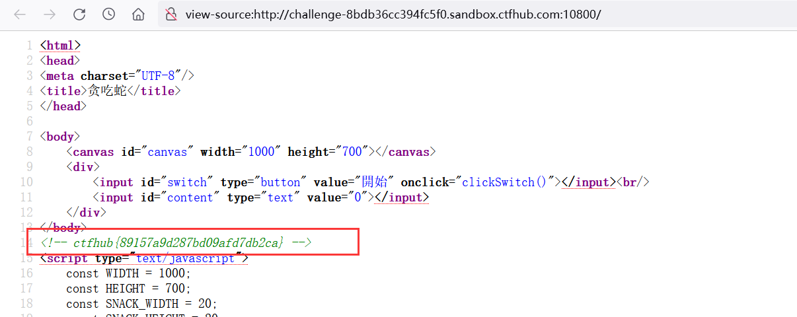
上述两种方法都可以得到 Flag：ctfhub{89157a9d287bd09afd7db2ca}
彩蛋
- 彩蛋图片：
- 作者：羽々斬 twi@u_u_zan，pid：2179695
- 来源：Touhou Gensou Eclipse Files